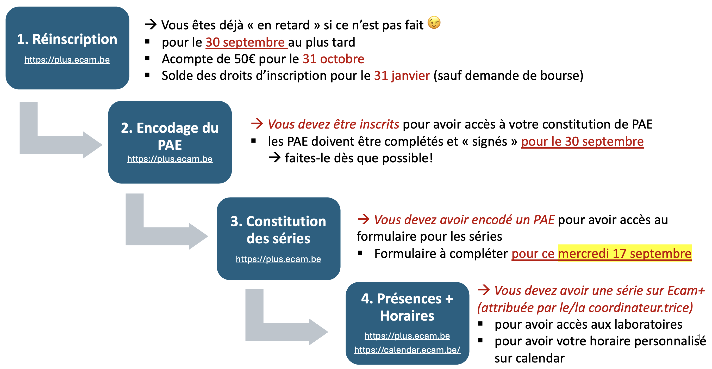

Join the Teams group Finalités
Informatique / Electronique, code nalmf23
RIP Claco (1847 - †2026).
New learning platform on https://moodle.ecam.be.
It will need some time to be properly populated. We’re still getting our hands on it.
Kindness (Bienveillance): Kindness means listening to, understanding, and supporting others with tolerance, while creating a respectful environment within the limits of one’s possibilities.
Collaboration: Collaboration means actively working with others, listening to their opinions, reassessing our viewpoints, and encouraging the exchange of ideas and expertise in a climate of mutual trust.
Commitment (Engagement): Commitment consists of proactively taking responsibility, investing oneself in one’s work and in the life of the institution while considering societal and environmental challenges.
Excellence: Excellence is characterized by the continuous pursuit of quality and improvement in everything we undertake.
Integrity: Integrity is reflected in exemplary behavior that embodies ECAM’s values, as well as honest and transparent communication regarding actions and decisions made in compliance with established rules.
The list of behaviors associated with each value is available on Moodle.

4MIN (2026 - 2027)
Q1
Q2
Architecture and software quality
4 ECTS
Artificial Intelligence
6 ECTS
Mobile development
3 ECTS
Web Architecture
4 ECTS
Database management system
4 ECTS
Network management
5 ECTS
Operating Systems
3 ECTS
GPU computing
6 ECTS
System on chip
3 ECTS
Robotics Project
9 ECTS
Computer Networks
5 ECTS
Hardware Testing Processes
2 ECTS
Gestion
6 ECTS
5MIN (2026 - 2027)
Q1
Q2
Distributed Systems Project
4 ECTS
Artificial Intelligence project
4 ECTS
Data center
3 ECTS
Software licences and GDPR
2 ECTS
Computer security
4 ECTS
Ethical Electronics & Informatics
3 ECTS
Gestion et stratégie financière
4 ECTS
Economie
4 ECTS
Langues
2 ECTS
Insertion professionnelle
10 ECTS
Travail de Fin d’études
20 ECTS
4MEO (2025 - 2026)
Q1
Q2
Architecture and software quality
2 ECTS
Artificial Intelligence
5 ECTS
Advanced PCB Design
4 ECTS
Computer Vision
3 ECTS
Microelectronics
4 ECTS
Telecommunications
5 ECTS
Operating Systems
3 ECTS
Power Electronics
7 ECTS
System on chip
5 ECTS
Robotics Project
9 ECTS
Computer Networks
5 ECTS
Hardware Testing Processes
2 ECTS
Gestion
6 ECTS
5MEO (2026 - 2027)
Q1
Q2
Biodiversity Monitoring Project
4 ECTS
Embedded Security Project
4 ECTS
High Frequency Circuit Design
9 ECTS
Ethical Electronics & Informatics
3 ECTS
Gestion et stratégie financière
4 ECTS
Economie
4 ECTS
Langues
2 ECTS
Insertion professionnelle
10 ECTS
Travail de Fin d’études
20 ECTS
Information about 5MIN/5MEO internships on Moodle (ECAM - Informations pour les étudiant·es > Stages et TFE)
Upcoming deadlines:
Information about Master’s Theses on Moodle (ECAM - Informations pour les étudiant·es > Stages et TFE)
Internship and thesis opportunities are posted in the Teams group Finalités Informatique / Electronique
⚠️ Be careful not to create a company that already exists! If you encounter contact information issues or similar problems → stages@ecam.be
Article 95 du règlement des études:
Dans tous les cas, l’usage d’un logiciel tel que ChatGPT ou de tout autre logiciel d’intelligence artificielle ne peut aboutir à une substitution complète ou partielle de la production personnelle de l’étudiante ou de l’étudiant, sous peine d’une sanction académique. Dans tous les cas, l’étudiante ou l’étudiant devra obligatoirement mentionner le recours à toute forme d’intelligence artificielle dans le cadre d’un travail et préciser l’usage qu’elle ou il en a fait, sous peine de s’exposer aux sanctions prévues à l’article suivant.
In all cases, the use of software such as ChatGPT or any other artificial intelligence software may not result in a complete or partial substitution of the student’s personal work, under penalty of academic sanctions. In all cases, students must explicitly declare the use of any form of artificial intelligence within an assignment and specify the purpose for which it was used, failing which they may be subject to the sanctions provided for in the following article.
A writing guide containing the recommended citation rules will be available on Moodle.
Here is how the process goes:
It’s important we get everybody’s opinion. Each course is only evaluated every three years.
Distribution of student cards.